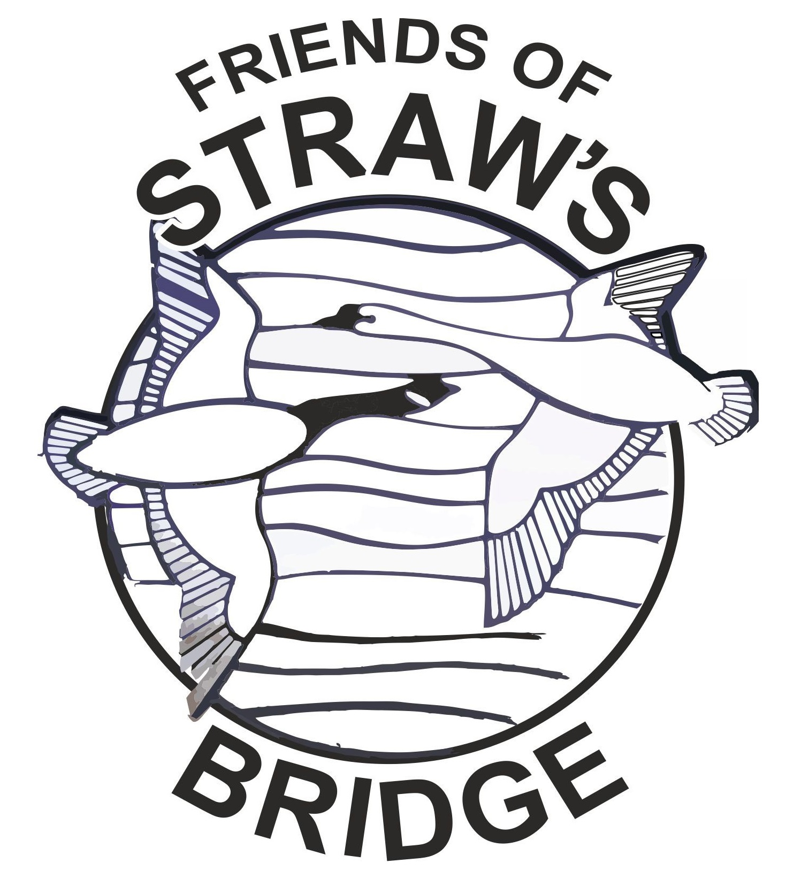

We hope to host our annual bat walk at the end of the summer. Join
us for a walk around the Straw's Bridge nature reserve and nearby
footpaths to see what bats we can see and hear on our bat
detectors! A limited number of bat detectors will be available
during the event - please return them after!
Next Meeting
The next meeting will take place at
Legs Wine Bar, on Tuesday 26th September 2023 at 7.30pm.
Legs Wine bar is found at 24 South Street, Ilkeston, DE7 5QE.
There is a council car park around the corner on Queen Street
which is free after 6pm
Past Events
here you will find reports from past events that the Friends have
attended or organised

New Events Added!
Bat Walk
Date: TBC
Next meeting
Tuesday 26th September 2023 at 7.30pm
Click here for more information,
directions and parking information
Location: Legs Wine Bar, 24 South Street, DE7 5QE
Latest News
New Website Launched
January 17th 2022
2022 sees the redesign of our website. Take a look around and let
us know what you think. Read more